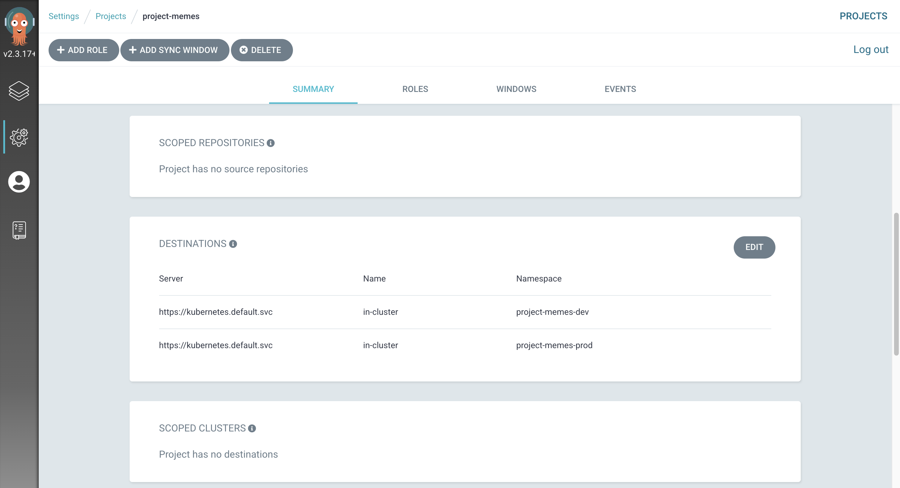
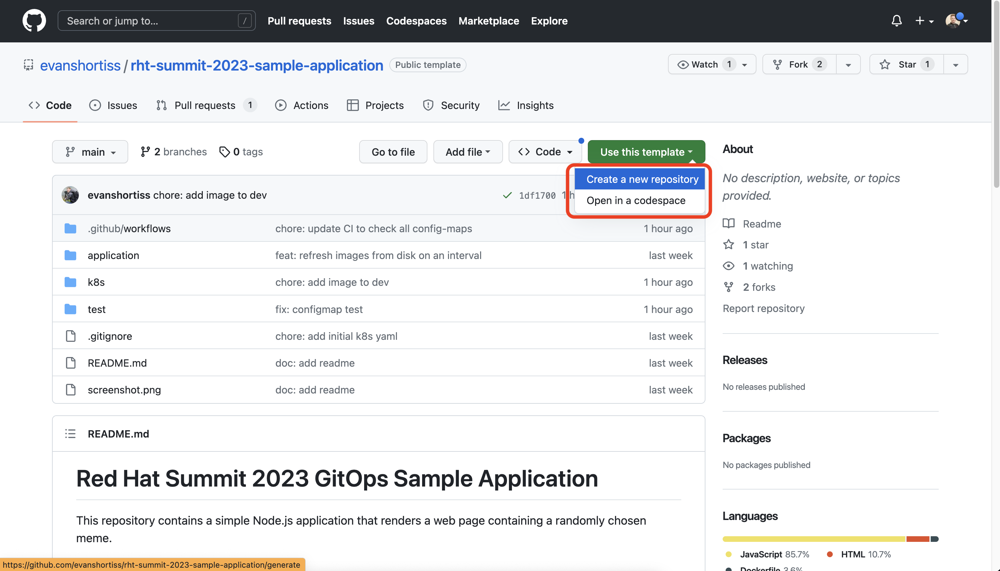
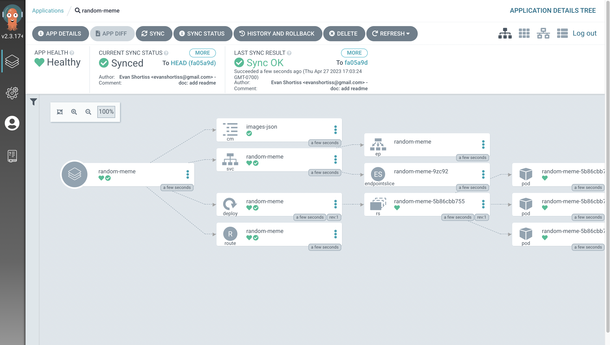
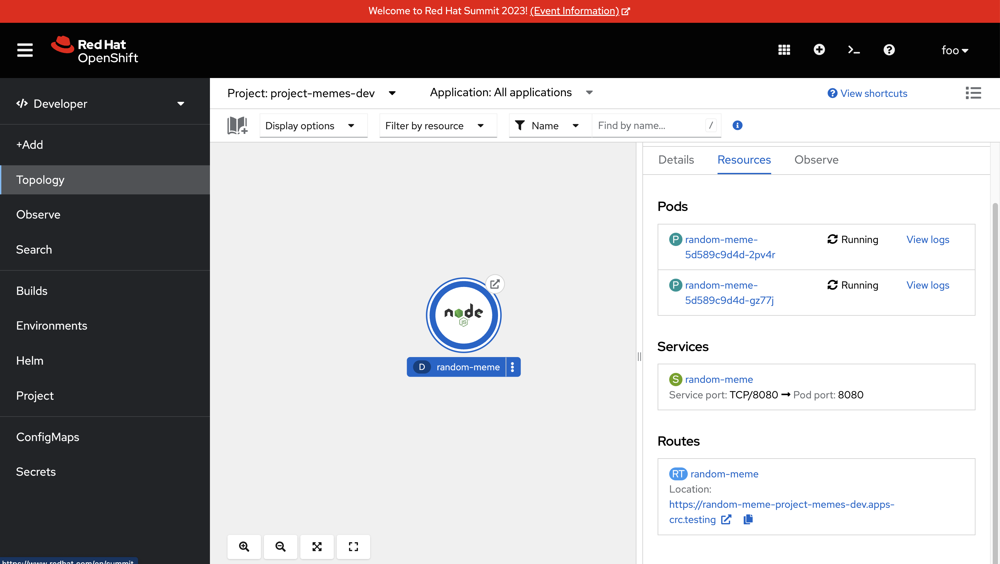
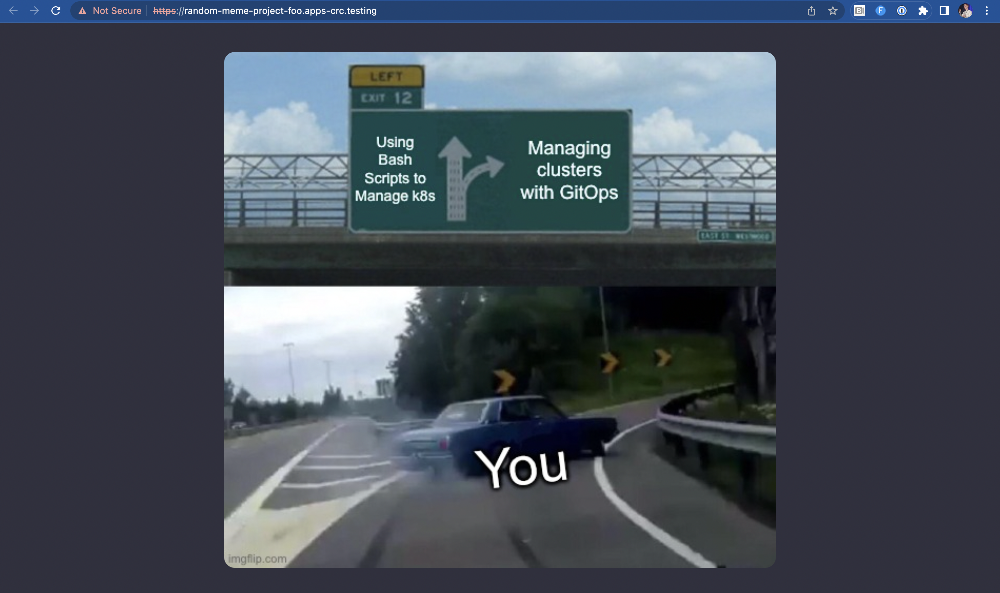

Continuous Delivery of an Application ⏱️ Estimated Time: 15 Minutes 👨💻 Role: Developer The moment of truth! Time to stretch your developer legs as the foo user, and have Argo CD continuously deploy an application of yours into the development environment that was setup in prior sections. In this section you’re no longer acting as a cluster administrator, but are instead acting playing the role of the foo developer that you’ve been configuring access for up to this point. For this section of the workshop you’ll be using this repository on GitHub. The linked repository contains a simple web application that renders a web page containing a randomly chosen meme. The repository also contains a set of resources in the k8s/ directory that will be used to deploy the application on OpenShift. You’re going to deploy this application into the project-memes-dev namespace, then make an update to the application Git repository that runs a CI pipeline, and observe how Argo CD detects the new changes and automatically deploys them to complete the CI/CD flow. Separating the OpenShift/Kubernetes resources and source code for an application into separate repositories is a common approach. To reduce the number of repositories you need to manage this workshop has placed both the source code and OpenShift/Kubernetes resources in this one repository. Login to Argo CD as a Developer User If you’re not already logged into the Argo CD dashboard as the foo user: Login to the OpenShift Web Console using the following steps: Select the standard-users provider. Use the username: foo. Use the password: foopassword. Click the Log in button. Expand the Application Launcher icon (3x3 sqaure) in the top-right of the OpenShift Web Console. Click the Cluster Argo CD link. This will open a new browser tab. Accept the self-signed certificate warning if one appears. The login page will now appear. Click the Log in via OpenShift button. Login using the same standard-users identity provider, the foo username, and the foopassword password you used previously. Create the Random Meme Application The foo user now has permission to create an Application that targets the project-memes-dev Namespace in the in-cluster destination. You observed this in the prior exercise by viewing the project-memes in the Projects section in the Settings screen.  Create an Argo CD Application to manage your containerised random meme web application: Visit the random-meme application repository. Click the Use this template button, and select Create a new repository from the list of options that are displayed.  Enter the following as the Repository Name. rht-summit-2023-sample-application Navigate to the Argo CD dashboard. Click the New App button. An overlay will appear. Switch to the YAML editor in the overlay using the Edit as YAML button. Fill in the form with the following information: Application Name: random-meme-dev (Using any other value will result in an error. Feel free to try a different value to see what happens!) Project: project-foo-dev Sync Policy: Automatic Prune Resources: Enabled Self Heal: Enabled Repository URL: https://github.com/%USERID%/rht-summit-2023-sample-application Path: k8s/overlays/development Cluster URL: https://kubernetes.default.svc Namespace: project-memes-dev (Using any other value will result in an error. Feel free to try a different value to see what happens!) After filling out these details you can switch to the YAML view and confirm that it matches this screenshot: Click the Create button. The Application creation should be a success, and a new random-meme-dev Application tile should be shown in the Argo CD dashboard. Clicking on the tile reveals the Application details. It should have synchronised successfully.  Test the Containerised Application Now that your containerised application has been deployed, go see what it does! Return to the OpenShift Web Console. Log in as either foo or opentlc-mgr user. Switch to the Developer perspective using the Perspective Switcher. Click the Topology link in the side-menu. Select the project-memes-dev from the Project dropdown. Click on the Node.js application in the topology. The application’s details will appear on the right.  Scroll down and click on the URL in the Routes section. A new browser tab will open and display a meme.  Excellent, you’ve just deployed a containerised application using Argo CD! Verify & Understand your Work Continuous Integration